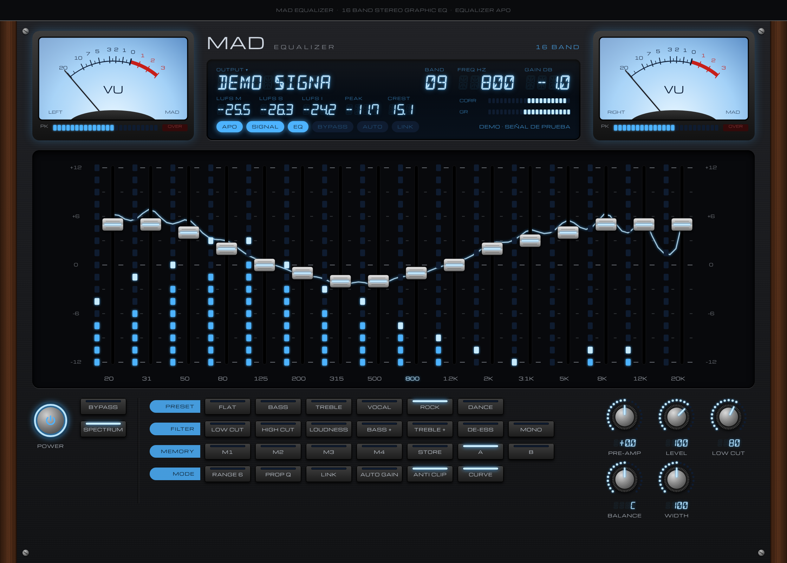

MAD EQUALIZER
Ecualizador gráfico estéreo vintage de 16 bandas para todo el audio del equipo, con analizador de espectro de LEDs, displays de 14 segmentos y VU analógicos. / Vintage 16-band stereo graphic equalizer for all of your computer's audio.

macOS
macOS 14.4 o posterior · Apple Silicon e Intel Descargar .dmgWindows
Incluye Equalizer APO · x64 Descargar .zip- 16 bandas ISO (20 Hz – 20 kHz), ±12 o ±6 dB, Q constante o proporcional.
- Medidores VU, LUFS (momentáneo, corto e integrado) y correlación de fase.
- Ancho estéreo (mid/side, 0–200 %) para abrir el sonido y separar instrumentos.
- Presets, 4 memorias, comparación A/B, auto-gain y edición L/R independiente.
- Las compilaciones no están firmadas; las instrucciones de instalación vienen dentro de cada descarga.